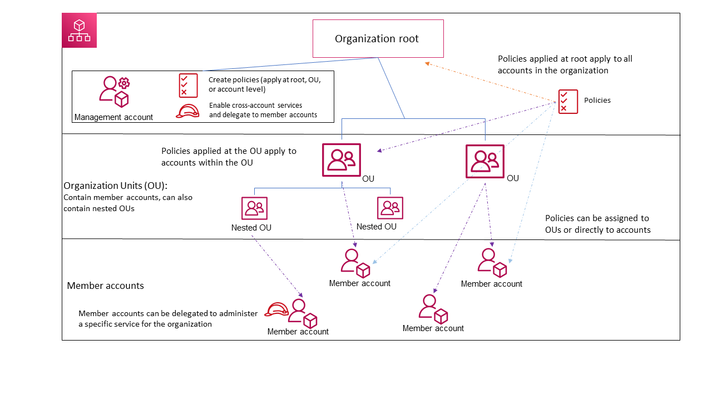
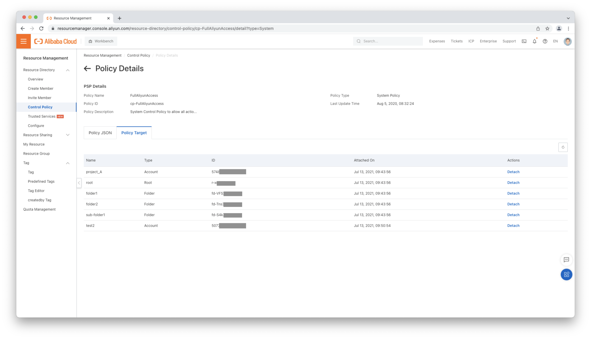

Multiple Accounts with CloudSSO Solution
CloudSSO simplify users management of multiple cloud accounts for enterprise
Why CloudSSO
For enterprise customers, a simple cloud account is really hard to support complex structure of organization.
Strict isolation policy between projects or departments means that multiple cloud accounts within the same enterprise account is required.
Enterprise services of Alibaba Cloud Resource Directory in Resource Management can support a root enterprise account with sub accounts according to organization hierarchy or projects.
With Resource Directory customers can manage member account manually, however this way is not efficient and difficult to maintain.
A centralized tool which can manage access permission of enterprise users to sub cloud accounts is required. Additionally SSO login with enterprise identity provider should be supported by the tool.
What is CloudSSO
CloudSSO is integrated with Alibaba Cloud Resource Directory to provide centralized multi-account identity management and access control.
You can use CloudSSO to manage enterprise users who need to access Alibaba Cloud resources and assign access permissions on the accounts
in a resource directory to the users in a centralized manner.
You can also configure settings only once to implement single sign-on (SSO) access to Alibaba Cloud resources from an identity provider (IdP).
Refer to CloudSSO.
Resource Management
Resource Management allows you to build an organizational structure for resources based on your business requirements.
You can use resource directories, resource groups, or tags to hierarchically organize and manage your cloud resources.
Refer to Resource Directory.
- A folder is an organizational unit in a resource directory. A folder may indicate a branch, line of business, or project of an enterprise. Each folder can contain members and subfolders, which forms a tree-shaped organizational structure.
- A member serves as a container for resources and is also an organizational unit in a resource directory. A member indicates a project or application. The resources of different members are isolated. You can use a management account to grant the required permissions to a RAM user or RAM role and use this RAM user or RAM role to log on to or access members.
Terraform
Alibaba Cloud Resource Management supports terraform, please visit
Resource Management with Terraform
What is Resource Access Management(RAM)
Alibaba Cloud Resource Access Management(RAM) is an identity and access control service which enables you to centrally manage your users (including employees,
systems or applications) and securely control their access to your resources through permission levels.
RAM thereby allows you to securely grant access permissions for Alibaba Cloud resources to only your selected high-privileged users, enterprise personnel and partners.
This helps to ensure secure and appropriate usage of your cloud resources and protects from any unsolicited access to your account.
Refer to Resource Access Management.
RAM supports SAML 2.0-based single sign-on (SSO), which is known as identity federation.
RAMandRAM SSOis used within one Alibaba Cloud account.
Relationship between RAM and CloudSSO
| Comparison | RAM | CloudSSO |
|---|---|---|
| Account type | one account | multi-account |
| Management target | resources | account |
CloudSSOis integrated with Resource Directory and allows you to manage identities and permissions for multiple Alibaba Cloud accounts in a centralized manner.Resource Access Management (RAM)allows you to manage identities and permissions within one Alibaba Cloud account.- If you use
CloudSSOto manage identities and permissions for the accounts in your resource directory in a centralized manner, you do not need to use RAM to manage permissions within one Alibaba Cloud account.
Refer to Relationship between CloudSSO and RAM.
Comparison with other Public Cloud Vendors
Azure Management Group and Subscriptions
- Management groups are a tool to help you structure your cloud environments for organization and governance at scale.
- Subscriptions are a unit of management, billing, and scale within Azure.

When you migrate accounts from Azure. Alibaba Member accounts can be treated as Azure Subscription which is the basic unit of management, all cloud resources are directly managed by Member accounts.
Alibaba Folder can be treated as Azure Management Group which is designed for organization and governance.
AWS Organization and Landing Zone
- AWS Organizations is an account management service that enables you to consolidate multiple AWS accounts into an organization that you create and centrally manage.
- The AWS Landing Zone is deployed into an AWS Organizations account. This account is used to manage configuration and access to AWS Landing Zone managed accounts.

When you migrate accounts from AWS. Alibaba Member accounts can be treated as AWS Member Account. Alibaba Folder can be treated as Azure Organization Unit.
How to set up CloudSSO
Login Alibaba Cloud portal
As above chart, you have several different ways to access Alibaba Cloud portal.
- RAM User logon: login to root account by
RAMusers for managingFoldersandMembers. - RAM IdP logon: login with an external IdP(e.g. enterprise IdPs) to root account by RAM user for managing
FoldersandMembers. - CloudSSO logon: login to sub member account by
CloudSSOusers for managing resources on cloud. - CloudSSO IdP logon: login with an external IdP(e.g. enterprise IdPs) to sub member accounts by
CloudSSOusers for managing resources on cloud.
Target
As above chart, following components will be created or setup.
- Create multi member accounts in an enterprise account on Alibaba Cloud.
- Setup
CloudSSOfor enterprise users logon. - Setup an enterprise
IdPfor logon. - Define policy for enterprise users to access member accounts. (e.g.
AdministratorAccessfor users in groupalibabassoadmin)
Requirements
- Alibaba Cloud
Enterprise Accountis required forCloudSSOandResource Directory. - An IdP, e.g. Azure AD IdP, Google or Github.
Step 1: Overview CloudSSO
Open CloudSSO portal in Alibaba Cloud. According to your user location, you can create a CloudSSO service near to users.
For this demo, Shanghai endpoint will be used. You can get the enterprise entry from User Logon URL,
this url will be used for Alibaba Cloud logon.
CloudSSOlogon url is different with normal logon andRAMlogon.
Step 2: Set up IdP in CloudSSO
Download SP meta from CloudSSO
In Settings, you can download a meta file about CloudSSO SP.
This file can be used in IdP vendor to save time for setting client.
Upload IdP information
You can download IdP meta file and then upload to CloudSSO.CloudSSO can retrieve required information and update config.
You can also modify config manually.
Step 3: Azure IdP Setup
Please follow CloudSSO logon from Azure AD
to complete Azure IdP setup.
Finally, you can download Federation Metadata XML and use it for setting in Step 2.
Step 4: Access Management
For access management of CloudSSO enterprise users, you need to define templates Access Configuration in Access Management.
Multi-account Permission Configuration
Once Access Configuration template is defined, you can bind it with groups.
Group based mapping
You can also manually bind Access Configuration template with given users.
Assignment
SCIM
System for Cross-domain Identity Management (SCIM) is a standard for automating the exchange of user identity information between identity domains, or IT systems.
Refer to SCIM
CloudSSO need to sync users before login. You can setup it in SCIM configuration.
Successful login
Once successful login, you can choose a member account to do further operation on cloud resources, e.g. ECS creation.
Resource Directory
In the Resource Directory page, administrators of root account can check overall Folders structure.
Resource Member
In the Resource Member page, administrators of root account can view all Members accounts.
Control Policy
In the Policy page, administrators of root account can view all Policy which can be assigned to users or groups.

References
 Wechat Pay
Wechat Pay Alipay
Alipay